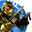

Halo 2Detalles
 |
|
| Tiempo de juego | 36s |
| Última actividad | 16/1/2026 12:07:22 |
| Añadido | 20/11/2025 14:45:24 |
| Modificado | 20/11/2025 14:57:30 |
| Estado de finalización | Jugado |
| Librería | Playnite |
| Fuente | |
| Plataforma | PC (Windows) |
| Fecha de lanzamiento | 9/11/2004 |
| Puntuación de la Comunidad | 84 |
| Puntuación de la Crítica | 81 |
| Puntuación de usuario | |
| Género | Shooter |
| Desarrollador | Bungie |
| Editor | Microsoft Game Studios |
| Característica | Co-Operative Multiplayer Single Player Split Screen |
| Enlaces | 🌟Halo 2 Anniversary 🌟HD Collection |
| Tag | |
Descripción
Para entender Halo, tenés que entender que no es solo un juego de tiros; es una saga de ciencia ficción al nivel de Star Wars.
La historia nos sitúa en el siglo XXVI. La humanidad se expandió por las estrellas, pero se topó con un muro: El Covenant. Una alianza religiosa de alienígenas fanáticos que consideran que nuestra especie es una herejía y debe ser exterminada.
Vos sos el Jefe Maestro (Master Chief/Spartan-117). Un súper soldado genéticamente modificado, criado para la guerra, envuelto en una armadura de media tonelada. Sos la última esperanza, el "demonio" al que los alienígenas le temen.
¿Qué esperar de HALO 2?
Si la primera parte (Combat Evolved) fue sobre el descubrimiento y la supervivencia en un mundo anillo misterioso, Halo 2 es sobre la GUERRA TOTAL.
- El Conflicto llega a Casa: El Covenant encontró la Tierra. La batalla ya no es en el espacio profundo; es en nuestras ciudades, en nuestras calles. La desesperación se siente en el aire.
- Una Historia más Profunda: Acá es donde la saga madura. Ya no son solo "monstruos malos". Vas a ver cómo funciona la jerarquía del Covenant, sus políticas internas y sus motivaciones. El universo se expande y deja de ser blanco y negro.
- Cine Puro: Esperá una narrativa mucho más cinematográfica, con una banda sonora orquestal que te pone la piel de gallina y momentos de acción que parecen sacados de una película de Hollywood de alto presupuesto.
Es la secuela de manual: más grande, más oscura y mucho más ambiciosa. Preparate, Spartan.
⚠️ ¿Buscás la versión Remasterizada?
Esta instalación es la versión "Legacy" original. Si querés jugar la saga con gráficos 4K, cinemáticas de Blur Studio y servidores modernos, te recomiendo comprar la Master Chief Collection: